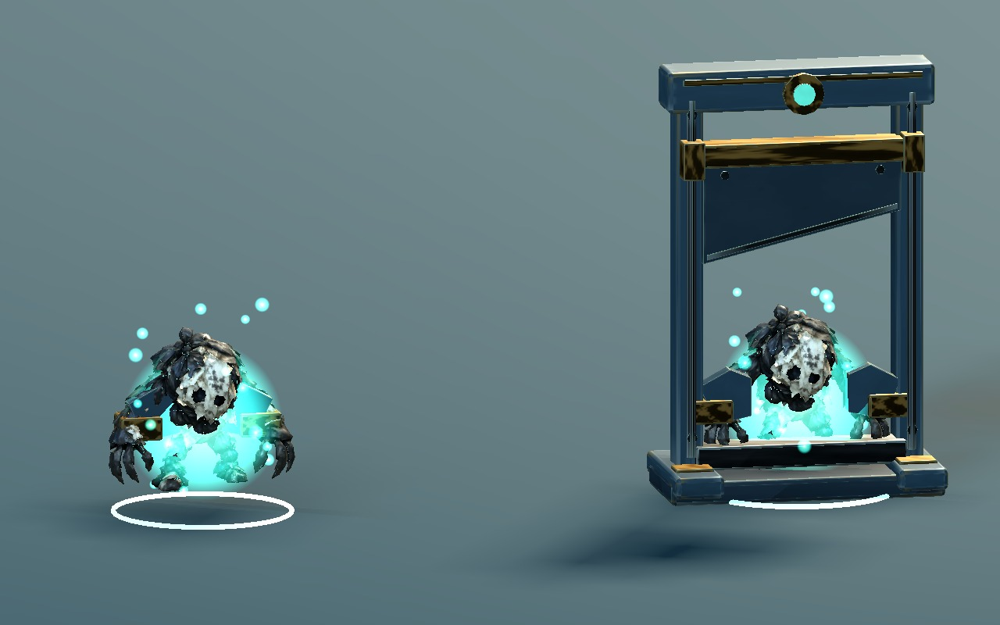
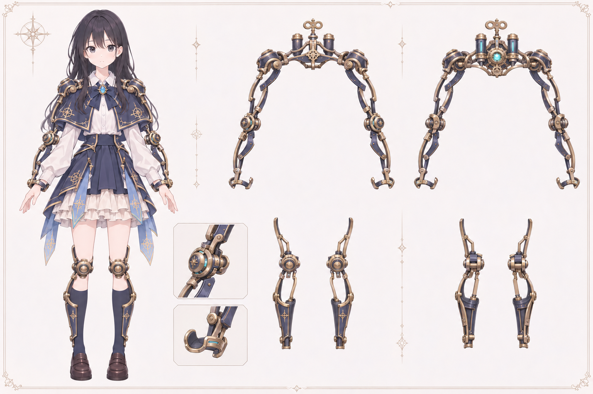
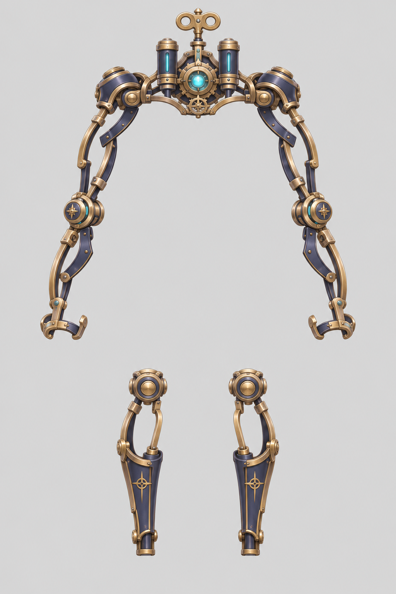
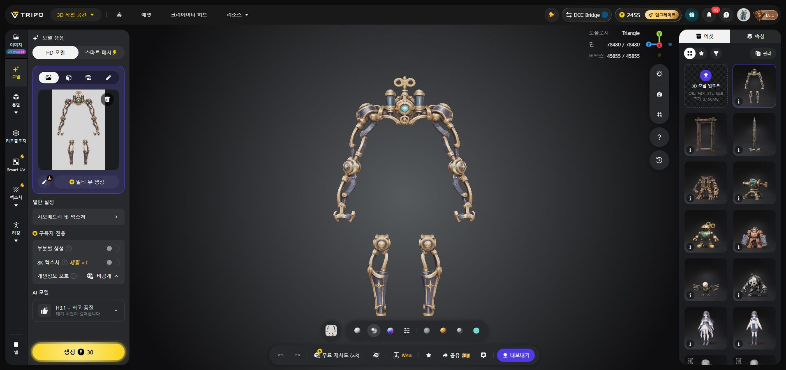

단두대 · 바닥까지
받침에 날이 통과할 틈을 만들고 낙하 거리를 늘렸습니다. 칼날 끝은 바닥 위 약 2mm에 멈추며, 회전 톱날형도 바닥까지 내려옵니다.
단두대의 바닥 도달과 고정 순서, 집행기의 압착 뒤 톱 진입을 수정했습니다. 새 외골격은 원화에서 Tripo 모델로 생성했습니다.

수정 v2이전 v1왼쪽이 수정본, 오른쪽이 이전본입니다. 고정형의 적 한 마리는 순서를 보여 주는 정지 참고 모델입니다. 동작 시각과 구속 표현은 모델 검토용이며 신규 스킬의 전투 판정은 아직 본편에 연결하지 않았습니다.
받침에 날이 통과할 틈을 만들고 낙하 거리를 늘렸습니다. 칼날 끝은 바닥 위 약 2mm에 멈추며, 회전 톱날형도 바닥까지 내려옵니다.
구속구 생성 → 적 한 마리를 고정 → 나머지 프레임과 칼날 조립 → 낙하. 본체가 조립되는 동안 구속구는 닫힌 위치를 유지합니다.
압착한 뒤 프레스가 다시 들립니다. 톱날은 프레스와 간격이 확보되는 시점부터 안으로 회전하며 들어가도록 바꿨습니다.
남색 장갑판, 황동 곡선 링크와 원형 관절, 등 동력부와 청록 코어. 손과 허벅지를 비우고 정강이 장치를 분리한 형태입니다.



H3.1 · 2K PBR · GLB 실측 78,478 삼각형. 생성본을 내려받아 Blender에 반입하고 텍스처를 함께 저장했습니다.
현재는 새 디자인과 생성 모델을 확인하는 단계입니다. 캐릭터에 맞추기, 관절별 부품 분할과 리깅은 다음 작업입니다.
원화는 내장 image_gen으로 생성했습니다. 원화 전체 프롬프트 · 입력 이미지 전체 프롬프트. 착용 일러스트는 디자인 설명용이며 게임 캐릭터 변경본이 아닙니다.
구동 장치는 저장 Blender/GLB 반입 검사를 통과했고, 동작 검사 107,791개와 GPU 캡처 388장을 기록했습니다. 반복 트림 UV·평면 캡·숨은 부품 접합면·GLB 경계 정점은 보존한 경고 사항입니다.
외골격은 원본을 보관하고 별도 작업본의 작은 UV 오류 12면과 실제로 겹친 미세 삼각형 4개를 정리했습니다. 작업본은 78,474 삼각형이며 저장본과 GLB 재반입 검사를 통과했습니다. UV 경계 정점·숨은 접합면·작은 수선 경계는 남겨 두었습니다. 장착 여유, 의상과의 간섭, 관절 분할·리깅·경량화는 아직 진행 전입니다.
지형·벽·적 신체와의 실제 접촉, 신규 스킬 규칙, 최종 성능과 아트 승인은 이번 검토 범위에 포함되지 않습니다.